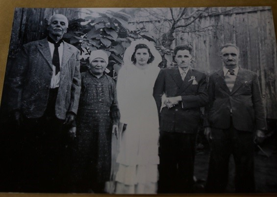

Nossa História Visual
Curiosidades e Registros Marcantes da Família
 1924
1924
A Viagem Oceânica. Dias de mar aberto.
Embarcar em um navio de Gênova rumo à América do Sul era uma jornada que testava a resistência física e emocional dos imigrantes. O balanço das águas, a alimentação restrita e a mistura de idiomas e esperanças marcaram aqueles intensos 16 dias até o Rio de Janeiro.
O Assentamento. A terra prometida.
A chegada em Linha Salvação representou o início do enraizamento da família Basso no solo gaúcho. Ali, com as próprias mãos e ferramentas rudimentares, derrubaram árvores, ergueram a primeira casa de madeira e iniciaram o plantio que garantiria o sustento dos filhos.

1926 1930
1930
Expansão da Árvore. Novos laços formados.
Com a comunidade ganhando corpo e a colônia prosperando, as gerações seguintes começaram a formar suas próprias famílias. Os casamentos eram grandes celebrações comunitárias, com muita música, vinho e a tradicional culinária vinda do norte da Itália.